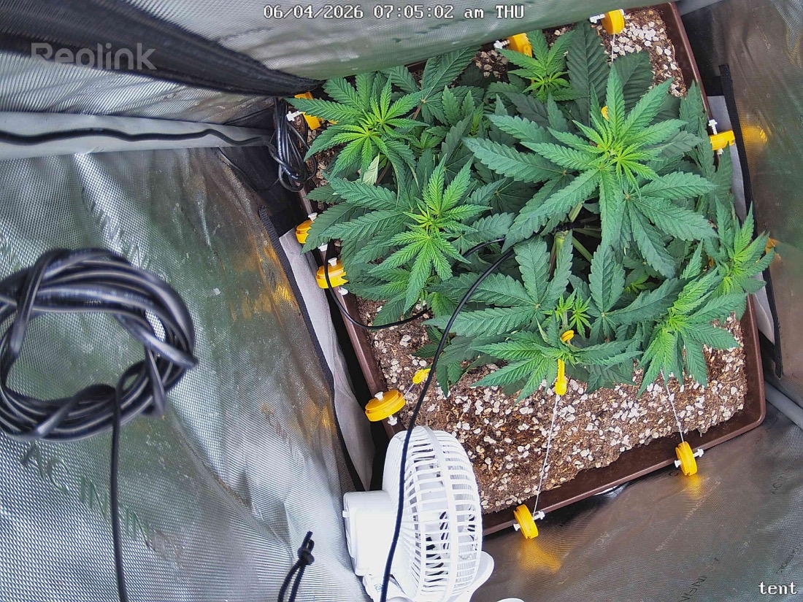

← All reports
Jun 4, 2026
Thu Jun 4, 2026 — 7:05 AM

Prognosis
Daily check — 2026-06-04
- Growth/structure: Noticeable canopy fill in 24h — interior leaves more expanded, several mid-tier fans pushing outward into the LST-trained spread. Plant is taking up more of the pot footprint. Healthy response to the flip.
- Color/posture: Uniform deep green, flat leaves, no praying-up or cupping. Petioles look relaxed (not droopy, not stiff). Morning lights-on shot — posture normal.
- Stress signs: None visible. No tacoing, bleaching, tip burn, interveinal yellowing, or pest damage. Soil surface looks appropriately dry on top (last water 6-1, ~3 days in) — moisture level looks fine, not soggy.
- Phase check: Day 1 of 12/12 (flipped 6-3). ~37 days from germ, well-topped and LST'd into a flat, multi-site canopy. Right on track — stretch will start within 3–7 days; expect 1.5–2× height over the next ~2 weeks.
- Light ramp-up: With no stress at 500 PPFD and flip just done, hold 500 for 3–5 days while she adjusts. Then bump ~50 PPFD every 2–3 days as long as leaves stay flat — target 600–700 PPFD by end of stretch, then 750–850 PPFD through mid-flower if leaf posture allows. SF-2000 Pro in a 2x2 can push 900+, but heat/VPD usually become the limit before the light does. Watch for tip-praying or edge curl as your "back off" signal.
- Bud sites: Counting the dominant tops and secondary nodes already broken out by topping + LST, I see roughly 6–10 viable main colas with another tier of smaller secondaries underneath. Solid structure for a 2x2.
- Harvest estimate (rough): In a 2x2 with SF-2000 Pro, living soil, single well-trained photo plant, typical yield is 2–4 oz dry. Given how even the canopy looks going into flip, a realistic target is ~3 oz — upside to ~4 if stretch fills cleanly and you don't run into late-flower deficiencies.
- Watering: Next water likely 6-5 or 6-6. Lift the pot to gauge; flip-week roots ramp up uptake.
- Next actions: No action needed today. Just hold light, let her stretch, and start watching for pistil formation in 7–14 days.
Overall: Textbook transition into flower — healthy, even, well-structured plant entering stretch exactly where it should be.